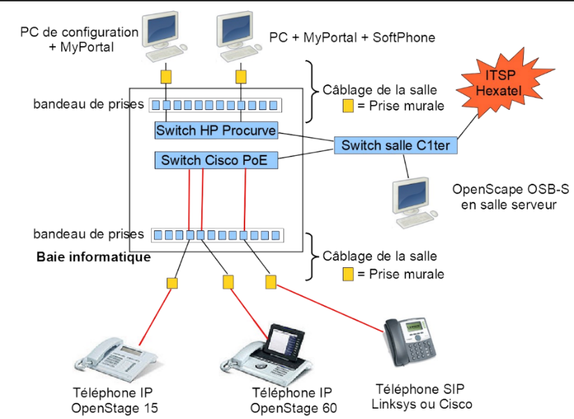

Voici un aperçu de mes divers projets.
Portfolio

Contexte
Durant le premier semestre de ma première année de BUT Réseaux et Télécommunications, j'ai réalisé un portfolio. Pour ce projet, j'ai bénéficié de 4 h d'initiation à la programmation HTML et CSS (HTML est le langage de programmation pour le "squelette" de la page Web, et CSS est comme la "peau" de la page Web, qui est destinée au style de la page). En outre, j'avais environ 12 h d'autonomie, mais une grande partie du travail était personnel. L'objectif de ce projet était de réaliser le portfolio disponible depuis mon CV pour augmenter mes chances de trouver une alternance.
Travaux réalisés
Pour atteindre cet objectif, j'ai utilisé l'éditeur de code Visual Studio Code pour programmer, et plus précisément l'extension Live Server qui permet d'afficher le rendu en direct dès que le code est modifié, me permettant d'avoir un œil constant sur ce que je modifie. Cette extension m'a apporté un gain de temps considérable car elle m'évitait d'aller sur le navigateur web et de recharger la page à chaque fois.

J'ai dû utiliser les bases vues en cours pour réaliser le HTML. En revanche, pour le CSS, certes j'ai utilisé quelques connaissances vues en cours, mais pour la quasi-totalité du style, j'ai dû consulter pendant plusieurs heures des vidéos, des tutoriels, notamment sur W3schools.com qui est un site internet qui explique chaque élément de chaque langage de programmation, ici HTML et CSS. Ce site internet m'a fait gagner beaucoup de temps car l'affichage est simple (voir capture d'écran ci-dessous), et me permet de voir l'utilité de la balise, et surtout d'autres balises et différentes utilisations pour celle-ci.

Résultats
Ce projet m'a apporté différentes compétences. Évidemment, mon niveau en HTML et CSS a grandement augmenté au vu de mes nombreuses recherches. De plus, j'ai gagné en rigueur car à de nombreuses reprises j'ai fait des étourderies au niveau du style CSS, ce qui avait totalement changé l'aspect de la page. De ce fait, j'ai appris à faire attention avec rigueur.
Découverte d'un dispositif de transmission

Contexte
En novembre 2024, j'ai réalisé un petit projet en télécommunications. Ce projet se déroulait en binôme, en autonomie pendant 4 h. L'objectif de ce projet était de découvrir et d'analyser un dispositif de transmission.
Travaux réalisés
Pour atteindre cet objectif, j'ai analysé plusieurs signaux à partir de captures d'écran de signaux passés à l'oscilloscope (voir image ci-dessus). J'ai dû relever la forme du signal, son amplitude, sa valeur crête à crête et plus encore. J'ai également fait des calculs pour retrouver des caractéristiques comme l'atténuation dans un câble de cuivre.

Bien que ce projet soit court, j'ai eu quelques difficultés. En effet, j'ai relevé une mauvaise valeur, nécessaire pour toute une série de calculs. Pourtant, toutes les valeurs paraissaient cohérentes. J'ai su corriger mon erreur en vérifiant auprès d'un de mes camarades plus à l'aise que moi en télécommunications, mais cette erreur m'a marqué et je vérifie davantage mes valeurs et je fais mes calculs plusieurs fois pour être sûr de ne pas commettre d'erreurs.
Résultats
Ce projet, bien que modeste, m'a permis de développer des compétences techniques fondamentales en télécommunications. Cependant, j'ai fait une erreur sur le relevé d'une valeur, qui a faussé tous les résultats et m'a appris l'importance de vérifier systématiquement les valeurs théoriques. Cette expérience m'a apporté une grande rigueur, indispensable pour éviter des incidents lors des travaux pratiques. Aujourd'hui, grâce à ces apprentissages, je réussis mes travaux pratiques avec facilité.
Découverte d'un réseau

Contexte
Durant le premier semestre de ma première année de BUT Réseaux et Télécommunications, j’ai réalisé une dizaine de travaux dirigés en réseau. Ces TD étaient individuels, sous la surveillance d’un enseignant qui n’intervenait que lorsque j’avais besoin d’aide. L’objectif de cette série de TD était de s’initier aux réseaux, à l’aide d’un logiciel de modélisation de réseaux : Cisco Packet Tracer.
Travaux réalisés
Pour atteindre cet objectif, j’ai appris à configurer différents périphériques, notamment à faire un adressage IP cohérent. Un adressage IP en informatique, c’est comme l’adressage de maisons dans une rue. La rue représente le réseau, le code postal représente le préfixe du réseau (ex : 192.168.1.) et enfin le numéro d’une maison correspond à l’adresse IP unique de l’appareil, car comme pour une rue, il ne peut pas y avoir deux maisons avec le même numéro.

J'ai également appris à configurer des commutateurs (un commutateur est comme une multiprise pour le réseau). J'ai dû faire des recherches sur internet pour trouver les commandes pour les configurer. Les commutateurs que j'utilisais sur Packet Tracer utilisent les mêmes commandes que de vrais commutateurs Cisco, me permettant alors d'être à l'aise si je suis amené à configurer ces commutateurs dans ma vie professionnelle.
Résultats
Cette série de travaux dirigés m’a permis d’obtenir davantage de rigueur, car un périphérique mal configuré dans un réseau peut entraîner le non-fonctionnement de celui-ci. De plus, j’ai su appliquer le cours sur une simulation concrète. Néanmoins, le cours n’était pas suffisant dans certaines circonstances, ce qui m’a obligé à chercher à apprendre certaines commandes pour configurer de vrais commutateurs Cisco par exemple, qui me serviront dans le futur de ma vie professionnelle.
Découverte de la téléphonie d'entreprise

Contexte
Durant le second semestre de ma première année de BUT Réseaux et Télécommunications, j’ai réalisé trois travaux dirigés en téléphonie. Ces TD étaient en trinôme, sous la surveillance d’un enseignant qui n’intervenait que lorsque j’avais besoin d’aide. L’objectif de cette série de TD était de s’initier à la téléphonie, en apprenant à configurer et créer un petit réseau téléphonique d'entreprise.
Travaux réalisés
Pour atteindre cet objectif, j'ai fait comme pour le réseau en apprenant à configurer des périphériques utilisateurs. Pour le réseau, j'ai commencé par configurer des ordinateurs et, quant à la téléphonie, j'ai installé et configuré des téléphones IP, alimentés en PoE (l'alimentation passe également par un câble réseau). Une fois ces compétences élémentaires acquises, j'ai commencé par configurer du matériel d'entreprise comme un call server, afin de créer un premier petit réseau téléphonique d'entreprise, pour que les différents téléphones du réseau puissent s'appeler.
Une fois le réseau terminé, il était temps d'ouvrir celui-ci en dehors de l'IUT, en configurant le call server pour donner un numéro de téléphone fixe à un téléphone de notre réseau, pour appeler notre téléphone personnel avec celui-ci. Pour cela, j'ai suivi une longue série de manipulations rigoureuses qui m'ont permis la réalisation de cet objectif.
Résultats
Cette série de travaux dirigés m’a permis d’obtenir davantage de rigueur, car tout comme le réseau, une mauvaise configuration peut rendre le réseau téléphonique inutilisable, et faire perdre beaucoup de temps pour corriger celui-ci.